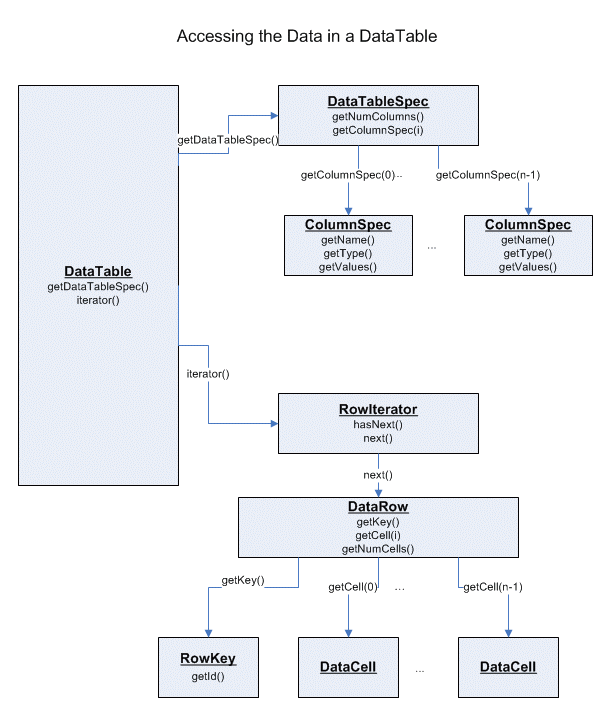

| Interface | Description |
|---|---|
| AdapterValue |
Interface defining access on
AdapterCell. |
| BooleanValue |
Interface supporting generic boolean values.
|
| BoundedValue |
A
DataCell should implement this interface to indicate that its
objects can be reasonably ordered. |
| ComplexNumberValue |
Interface supporting generic complex number values.
|
| ConfigurableDataCellFactory |
Additional interface for
DataCellFactorys that can be configured, e.g. |
| DataCellDataInput | |
| DataCellDataOutput |
Extended
DataOutput, which also allows the serialization of
DataCell objects. |
| DataCellFactory |
Interface for a factory that can create data cells from certain input formats.
|
| DataCellFactory.FromComplexString |
Factory that creates cells from complex, usually multi-line, string representations.
|
| DataCellFactory.FromInputStream |
Factory that creates cells from an binary input stream.
|
| DataCellFactory.FromReader |
Factory that creates cells from an character reader.
|
| DataCellFactory.FromSimpleString |
Factory that creates cells from simple, usually single-line, strings.
|
| DataCellFactory.FromString |
Factory that creates cells from strings.
This interface is not meant for direct implementation. |
| DataCellSerializer<T extends DataCell> |
Interface for classes that can read or write specific
DataCell implementations. |
| DataRow |
Container interface for a vector of
DataCells and a row key for
unique identification. |
| DataTable |
Most general data interface in table structure with a fixed number of columns
and iterable rows (no random access).
|
| DataValue |
The interface all value interfaces of
DataCells
are derived from. |
| DomainCreatorColumnSelection |
Defines which columns are effected by the DataTableDomainCreator.
|
| DoubleValue |
Interface supporting generic double values.
|
| FuzzyIntervalValue |
Interface supporting fuzzy interval cells holding support and core min and
max values.
|
| FuzzyNumberValue |
Interface supporting fuzzy numbers defined by min and max support, and core.
|
| IntervalValue |
Interface supporting interval cells holding minimum and maximum boundaries.
|
| IntValue |
Interface supporting generic int values.
|
| LongValue |
Interface supporting generic long values.
|
| MissingValue | |
| NominalValue |
Interface of a
StringCell, which does
not enforce additional functionality but indicates that cells implementing
this value can be used as nominal values. |
| RWAdapterValue |
Extension for an adapter value that allows adding new cells to the adapter.
|
| StringValue |
Interface of a
StringCell, forces method to
return string value. |
| TimestampValue | Deprecated
Date and time in KNIME is represented by
DateAndTimeValue and
DateAndTimeCell. |
| Class | Description |
|---|---|
| AdapterCell |
Abstract implementation of an adapter cell.
|
| AdapterCell.AdapterCellSerializer<T extends AdapterCell> |
(De)serializer for adapter cells.
|
| AutoconvertRowIterator |
Decorator for a row iterator that transparently converts a certain column using a
DataCellTypeConverter. |
| BooleanValue.BooleanUtilityFactory |
Implementations of the meta information of this value class.
|
| ComplexNumberValue.ComplexNumberUtilityFactory |
Meta information to the complex number value.
|
| ComplexNumberValueComparator |
Comparator returned by the
ComplexNumberValue. |
| DataCell |
Abstract base class of all
DataCells, which acts as a container
for arbitrary values and defines the common abilities all cells must provide,
that is: retrieve the cell type, a string representation of the value,
find out if this cell is missing, and test whether it is equal to another
one. |
| DataCellTypeConverter |
Interface for converters from one cell type to another.
|
| DataColumnDomain |
Final
DataColumnDomain object holding meta infos about one
column, that are, possible values and/or upper and lower bounds - if
available. |
| DataColumnDomainCreator |
A column domain creator is used to initialize possible values and lower and
upper bounds using
DataCell objects. |
| DataColumnProperties |
Property map that contains annotations assigned to a column.
|
| DataColumnSpec |
A
DataColumnSpec describes one column in a
DataTable. |
| DataColumnSpecCreator |
A factory class to create a
DataColumnSpec (as the only way from
outside this package). |
| DataTableDomainCreator |
Create or recreate domain of a data table.
|
| DataTableSpec |
DataTableSpecs specify the structure of a DataTable. |
| DataTableSpec.Serializer |
Serializer for
DataTableSpecs. |
| DataTableSpecCreator |
Creator for
DataTableSpec. |
| DataType |
Type description associated with a certain implementation of a
DataCell. |
| DataType.MissingCell | Deprecated
Missing cell in package is used instead:
MissingCell |
| DataTypeRegistry |
A registry for all
DataTypes that are registered via the extension point org.knime.core.DataType. |
| DataValue.UtilityFactory |
Implementation of the meta information to a
DataValue. |
| DataValueComparator |
The comparator used to compare two
DataValue
objects. |
| DoubleValue.DoubleUtilityFactory |
Implementations of the meta information of this value class.
|
| DoubleValueComparator |
Comparator returned by the
DoubleValue interface. |
| ExtensibleUtilityFactory | |
| FuzzyIntervalValue.FuzzyIntervalUtilityFactory |
Implementations of the meta information of this value class.
|
| FuzzyIntervalValueComparator |
Comparator returned by the
FuzzyIntervalValue datacell type. |
| FuzzyNumberValue.FuzzyNumberUtilityFactory |
Implementations of the meta information of this value class.
|
| FuzzyNumberValueComparator |
Comparator returned by the
FuzzyNumberValue datacell type. |
| IntervalValue.IntervalUtilityFactory |
Implementations of the meta information of this value class.
|
| IntervalValueComparator |
Comparator returned by the
IntervalValue datacell type. |
| IntValue.IntUtilityFactory |
Implementations of the meta information of this value class.
|
| IntValueComparator |
Comparator returned by the
IntValue interface. |
| LongValue.LongUtilityFactory |
Implementations of the meta information of this value class.
|
| LongValueComparator |
Comparator returned by the
LongValue interface. |
| MissingCell |
Cell implementation to MissingValue.
|
| MissingCell.MissingSerializer |
Factory for (de-)serializing a MissingCell.
|
| NoSerializer<T extends DataCell> |
This is a marker serializer for cell implementations that don't have their own serializer (which is highly
discouraged).
|
| RowIterator |
Classes extending this class iterate over the rows of a
DataTable. |
| RowKey |
Key for a specific row which holds an identifier of type
String. |
| StringValue.StringUtilityFactory |
Implementations of the meta information of this value class.
|
| StringValueComparator |
Comparator returned by the StringValue interface.
|
| TimestampValue.TimestampUtilityFactory |
Implementations of the meta information of this value class.
|
| TimestampValue.TimestampValueComparator |
Comparator returned by the
TimestampValue interface. |
DataCell
and DataTable and related
classes, used to store and access the actual data.
A DataTable is used to pass data
along between nodes in the workflow.
It has rows and columns. The number of columns is fixed. The type of data stored
in each column is well defined, and each column has a unique name. Each row
consists of a certain number of cells (which contain the actual data) and a
unique row identifier. The data in a DataTable is read-only.
A DataTable contains a DataTableSpec object which describes the
structure of the table (the number of columns, the column types, etc.) and a
RowIterator which allows to iterate over
the rows of the table and actually access the data.
The iterator returns DataRows, that allow
access to all DataCells in this row by
index (the index of the column). The number of rows is usually not known in
advance (not in all tables), the iterator indicates when it reaches the end of
the table. As the source underlying the table could be sequential and of
arbitrary size, the general DataTable
interface doesn't provide any random access methods.
The DataTableSpec contains the meta
information of the data table. It can be used to query the columns' name and
type, and the number of columns. In addition to that it is also used to pass
information along to connected successors to let them know of the structure of
the table to come. So, if the successor's preparations for execution (like the
settings) depend on the structure of the data table of the predecessor, it can
be set up after it received the DataTableSpec.

DataCells are of certain type, depending on
the type of data appearing in the corresponding column. For each data cell type
certain objects exist describing the cell's properties, capabilities and
compatibilities. This is the DataCell
derivative implementing DataValue, which
defines how to access the value stored in the data cell.
Read more on data cells here and in
the FAQ.
Default implementations of DataCells can be
found in the org.knime.core.data.def
package. These implementations store the value of the cell in a member of the
corresponding Java data type.
DataTables could be arbitrary big, thus
they shouldn't be copied or held in memory.
KNIME GmbH, Konstanz, Germany
You may not modify, publish, transmit, transfer or sell, reproduce, create derivative works from, distribute, perform, display, or in any way exploit any of the content, in whole or in part, except as otherwise expressly permitted in writing by the copyright owner or as specified in the license file distributed with this product.